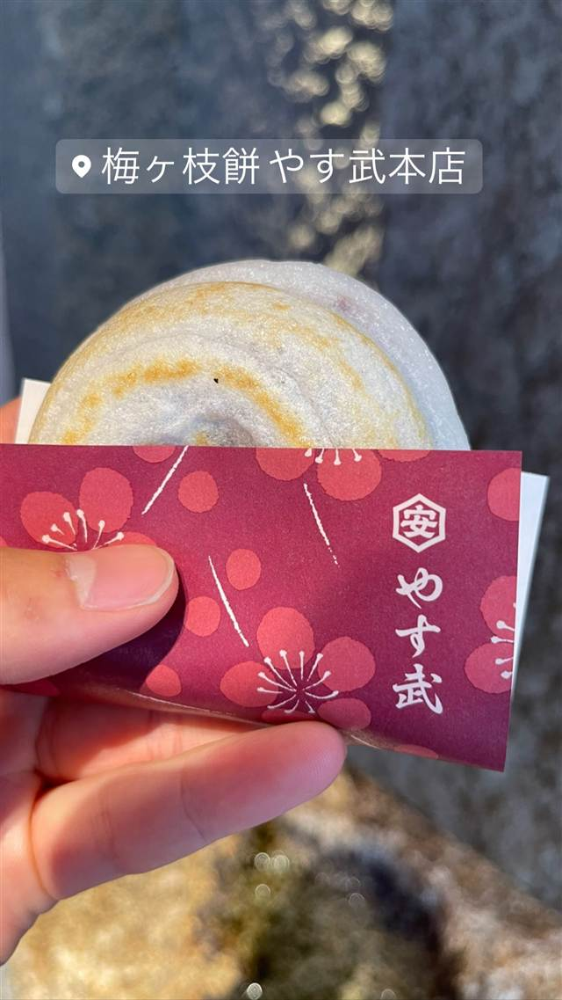

スイーツ · 和菓子 · 太宰府
太宰府参道 天山 太宰府本店
太宰府政庁跡出土の鬼瓦がモチーフの鬼瓦最中
太宰府参道 天山 太宰府本店...
太宰府参道 天山は、太宰府政庁跡出土の鬼瓦をかたどった「鬼瓦最中」で知られる和菓子店。冬季には福岡産あまおう苺を使った「あまおういちご大福」や「あまおういちご大福最中」が名物となり、参道で行列ができる人気店。
TRIVIA
豆知識
- 最中の形は太宰府政庁跡から出土した鬼瓦がモチーフになっている
- 冬季（11〜3月）はあまおう苺を使った大福・最中が人気で行列ができる
REVIEWS
世間の評判
3.57食べログ
葛アイスのもちもち食感が人気
- 葛アイスのもちもち感とひんやりした食感を評価する声が多い
- あまおう苺を使った商品の人気が高いという声が多い
- いつも行列ができているが回転が早いという声がある
- 価格がやや割高だと感じる人もいる
食べログ 口コミ514件
| 看板 | 鬼瓦最中、あまおういちご大福・あまおういちご大福最中 |
|---|---|
| こだわり | 鬼瓦最中は太宰府政庁跡から出土した鬼瓦をかたどった最中種を使用 |
| どこから | 遠方 |
| 行くなら | 行列 |
| 営業時間 | 月〜日 08:30-17:30 |
| 予算 | 昼 ～¥999 |
| 定休日 | 不定休 |
| 予約 | 予約不可 |
| 場所 | 西鉄太宰府駅 福岡県太宰府市宰府（太宰府天満宮参道） |
| メモ | 西鉄太宰府駅から参道を天満宮へ向かう最初の鳥居そばに立地、冬季限定商品で行列ができる |
食べたもの：いちご大福
OFFICIAL
店からの知らせ
その日の限定や臨時の休みは、店のInstagramに出ます。
NEARBY
近い店・同じ系統の店
-
 和菓子 恵比寿
たいやき ひいらぎ
1個焼くのに30分かける東京五大たい焼きの一つ
昼 ～¥999 夜 ～¥999
和菓子 恵比寿
たいやき ひいらぎ
1個焼くのに30分かける東京五大たい焼きの一つ
昼 ～¥999 夜 ～¥999
-
 和菓子 麻布十番
浪花家総本店
たい焼き発祥ともいわれ、100年以上一丁焼きを守り続ける最古参の店
和菓子 麻布十番
浪花家総本店
たい焼き発祥ともいわれ、100年以上一丁焼きを守り続ける最古参の店
-
 和菓子 箱根湯本駅
菊川商店
製造終了した希少な専用焼き機を2台所有し焼きたてまんじゅうを提供
昼 ～¥999 夜 ～¥999
和菓子 箱根湯本駅
菊川商店
製造終了した希少な専用焼き機を2台所有し焼きたてまんじゅうを提供
昼 ～¥999 夜 ～¥999
-
 和菓子 許田
琉球銘菓 三矢本舗 道の駅許田店
3人兄弟の屋号を掲げるサーターアンダギー専門店
和菓子 許田
琉球銘菓 三矢本舗 道の駅許田店
3人兄弟の屋号を掲げるサーターアンダギー専門店
-

スイーツ 西鉄太宰府駅 梅ヶ枝餅 やす武本店 菅原道真公に老婆が梅の枝で捧げたと伝わる梅ヶ枝餅 昼 ～¥999 夜 ～¥999 -
 和菓子 大山ケーブル駅
茶寮 石尊
大山阿夫利神社境内の御神水を使い標高700mの絶景テラスで味わう
昼 ¥1,000～¥1,999 夜 ¥1,000～¥1,999
和菓子 大山ケーブル駅
茶寮 石尊
大山阿夫利神社境内の御神水を使い標高700mの絶景テラスで味わう
昼 ¥1,000～¥1,999 夜 ¥1,000～¥1,999